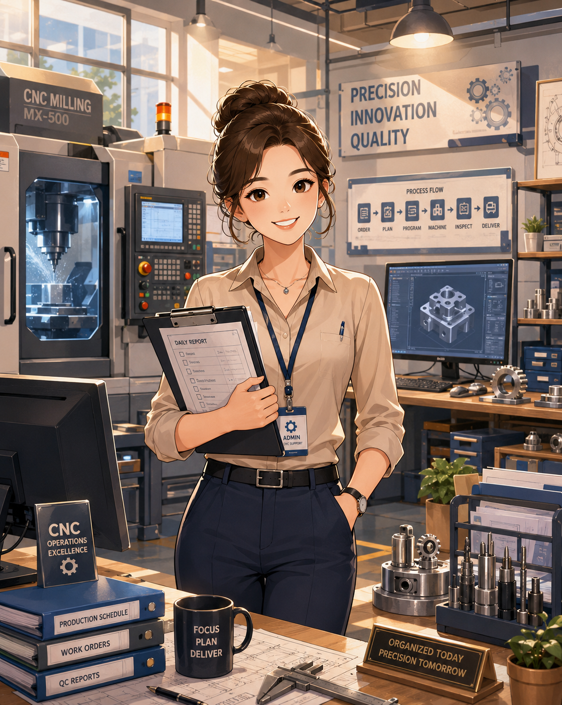

Profile
Portrait
蔡承紘 · Tsai Cheng-Hung
My journey, left → right.
I build AI that speaks human — RAG systems, autonomous agents, and the interfaces that make them effortless.

A medical-informatics graduate who fell for frontend craft.
AI Application & Frontend Engineer — building reliable AI systems and shipping real-world products.
I'm a Master's graduate from the AI track of Medical Informatics at Kaohsiung Medical University, specializing in RAG systems, agentic workflows, and the frontend interfaces that bring them to life.
With a focus on moving AI from prototype to production, I've built and deployed agentic workflows with LangGraph and RAG-driven Q&A pipelines — from a complete air-pollution thesis system to multi-agent consultation platforms. My strength lies in bridging large language models and robust full-stack systems: integrating vector databases, prompt and persona control, and guardrails that keep model output reliable and user-friendly.
A horizontal look back at every role I've worn — from hospital floors to AI engineering.
My journey, left → right.
 Undergraduate
UndergraduateWhere my healthcare foundation began.
 Internship
InternshipExposure to hospital quality & process.
 Hospital
HospitalRecords, tracking & health-check reports.
 Master's
Master'sBuilt & deployed a RAG thesis system.
 Teaching
TeachingGuided ~100 students in generative AI.
.png) Internship
InternshipAgent flows, RAG & full-stack product.
 Current
CurrentProduction RAG systems, agents & automation.
1–2 years across AI engineering, full-stack, and teaching.
Building production RAG systems, autonomous agents, and automation pipelines.
Full-stack on a small product, frontend lead on a large one. Agent flows (LangGraph/LangChain), Flask & FastAPI, RAG, streaming responses; React/Next.js, Zustand, Prisma + PostgreSQL.
Supported ~100 students in model application and coding; designed AI problem-solving tasks.
From embeddings to interfaces.
Systems shipped, not just demoed.
Multi-agent consultation platform with SSE streaming and a custom Zi-Wei chart engine.
Fully local RAG platform: upload PDFs & images, parse, index, and chat — data never leaves the box.
My Master's thesis system — deployed publicly via DuckDNS + Nginx with HTTPS.
A ReAct agent that chooses between a local doctor database and live web search per question.
AIET 2026 · Zagreb, Croatia